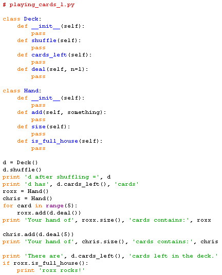

Based on the classes and methods we have identified we can add empty class and method definitions above our specification code. This is sometimes called stubbing out the methods:

Notes:
pass statement as a placeholder.__init__ methods are
required and will contain the code necessary to
construct an object of each type.